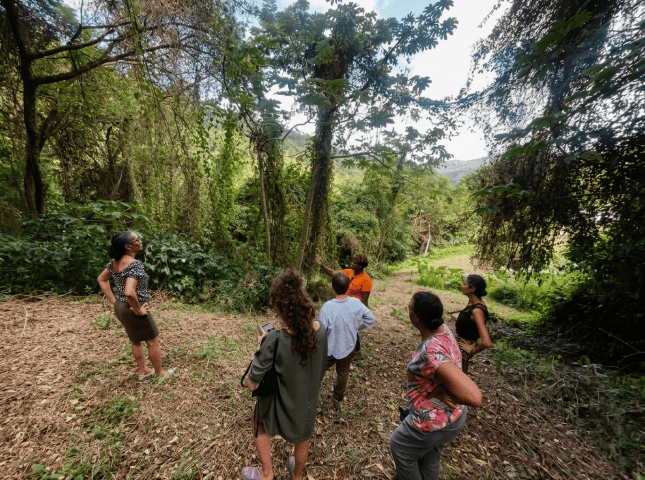
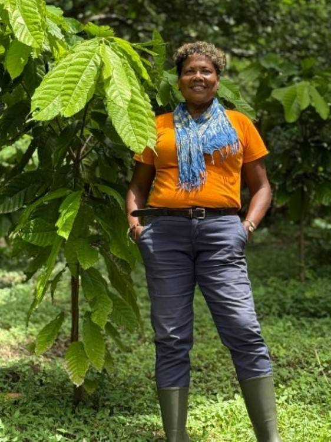

Notre Vision
Souveraineté
Alimentaire
Le Constat
La Martinique souffre d'un mal-développement agricole profond. Dépendance alimentaire, importations massives, contamination des sols au chlordécone, disparition des variétés locales, vieillissement des agriculteurs… L'île importe plus de 80% de sa consommation alimentaire.
Ce modèle hérité de la colonisation : grandes monocultures d'exportation au détriment de la polyculture vivrière, a fragilisé la souveraineté alimentaire et la santé des populations.
La Réponse Domenn Lantik
Domenn Lantik se positionne comme un laboratoire de solutions concrètes : pépinière de variétés locales, modèles d'autosuffisance, circuits courts, régénération des sols, transmission des savoirs autochtones.
En lien avec des initiatives comme Jaden Poulimanité et les savoirs des femmes autochtones ultramarines, le projet incarne une agriculture résiliente, thérapeutique et culturellement ancrée.

Quand les femmes autochtones des Outre-mer partagent leurs savoirs écologiques
Domenn Lantik s'inscrit dans la lignée des Rencontres du Matrimoine Ultramarin, où les femmes autochtones des territoires d'Outre-mer transmettent leurs savoirs écologiques ancestraux.
Phytothérapie, pratiques agricoles traditionnelles, connaissance des sols et des cycles naturels : ces savoirs constituent un patrimoine vivant essentiel pour la résilience des territoires ultramarins.
L'État
du Projet
Vision clairement exprimée
Le projet dispose d'une vision précise de l'aménagement et de l'offre visées. Le concept DOMENN LANTIK est défini, documenté et porté par une équipe engagée.
Partenaires impliqués
Le projet dispose de partenaires et d'appuis qui s'impliquent et s'engagent pour permettre son amorce, sans attendre les financements extérieurs.
Site exploitable
Le site est d'ores et déjà exploitable en partie, notamment pour l'accueil de groupes et l'organisation de rencontres et d'échanges en pleine nature.
Cœur d'équipe constitué
Une équipe projet est constituée sur la base du partage de la vision et de la philosophie du projet. Ensemble, elles et ils portent l'ambition d'une nouvelle Martinique.

« La terre ne ment jamais. C'est à nous de réapprendre à l'écouter. »
Monette Joëlle
MARIE-LOUISE
Gérante de l'EARL DOMENN LANTIK, Monette Joëlle MARIE-LOUISE porte une vision résolument tournée vers l'avenir de la Martinique. Son engagement pour la souveraineté alimentaire et le bien-être des populations guide chaque dimension du projet.
Forte d'un parcours ancré dans le territoire, elle conçoit Domenn Lantik comme un modèle reproductible : un lieu où agriculture, thérapie, culture et transmission se nourrissent mutuellement.
Structure
EARL DOMENN LANTIK
Adresse
Quartier Plaisance, Montagne du Vauclin 97280
Venez découvrir
le domaine
Contactez-nous pour organiser une visite ou un événement dans ce cadre unique.